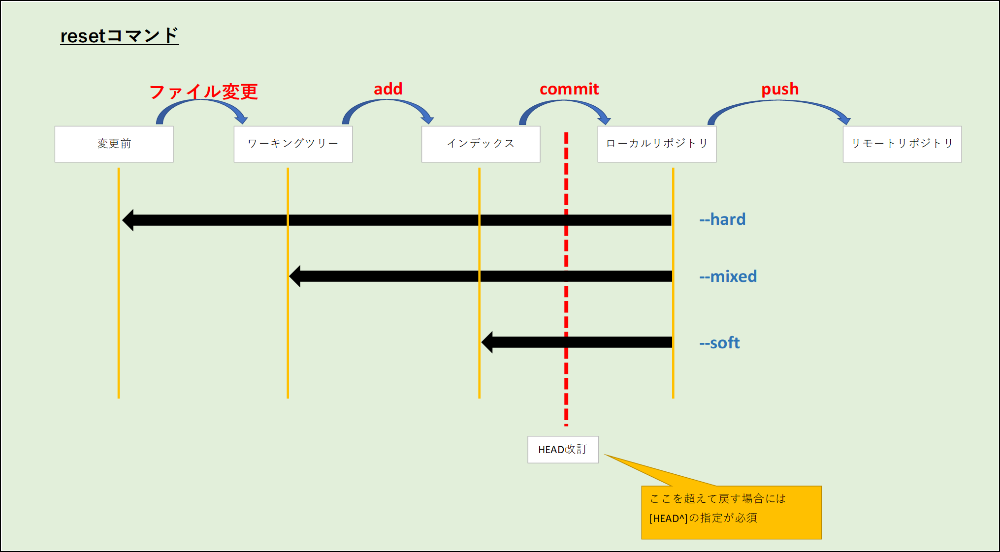
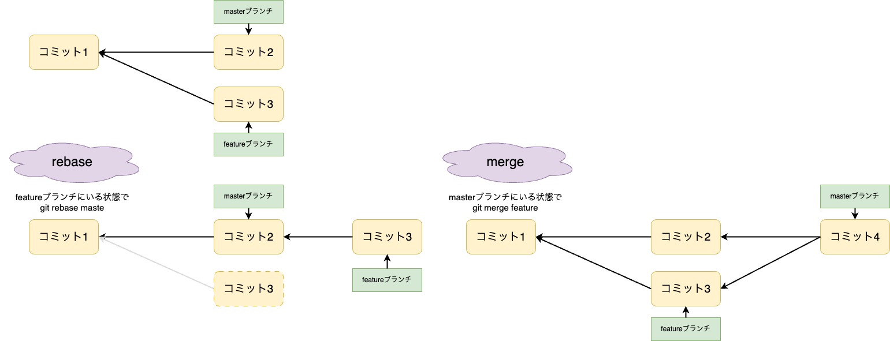

コマンド
変更ファイルの取り消し(add前ファイルの取消)
git checkout HEAD -- [ファイル名]
→ファイル変更が消える
git checkout HEAD -- [ディレクトリ名]
→ディレクトリ単位で取り消し
git checkout -- .
→全変更の取り消し
変更ファイルの取り消し(addの取消)
git reset HEAD [ファイル名]
git reset HEAD [ディレクトリ名]
git reset HEAD .
→ファイル変更は残る
commitの取消
■ commitの取消（直前のコミットのみ取消。addも取消）
git reset --mixed HEAD^
■ commitの取消（直前のコミットのみ取消。addされた状態）
git reset --soft HEAD^
■ commitの取消（直前のコミットのみ取消。ファイル変更もなし）
git reset --hard HEAD^

commitのやり直し
■ commitのやり直し（直前１回のみ）
git commit --ammend
→直前の１回のやり直し
→直前のコミットに追加でコミット内容を追加
→コミットメッセージの内容を修正
※pushした後に--amendすることは厳禁
■ commitのやり直し（直前複数回）
git rebase -i HEAD~5
→直前５回の取り消し（５回の中でどれとどれみたいな選択可能）
git rebase -i [commit番号]
リモートから情報を取得
git fetch
git merge [リモート名]/[取込ブランチ]
→現在いるブランチ（HEAD）に指定ブランチを取り込む
git pull [リモート名] [取込ブランチ名]
→ fetchとmergeを1発で実施する
履歴を整えた形で統合(rebase)
■ 履歴を整えた形で統合
git rebase [親にするブランチ名]
→現在のブランチ（HEAD）を指定したブランチの子ブランチにする
→pushしたコミットをリベースは絶対にNG

作業退避(stash)
■ 作業を一時退避
git stash
■ 退避データを確認
git stash list
■ 退避データを復元
# 直前の作業を復元
git stash apply
git stash apply --index
→ indexオプションを付加するとステージング状態（git addしたもの）のものも復元
# 特定の作業を復元
git stash apply [スタッシュ名]
git stash apply stash@{1}
# 退避データの削除
git stash drop [スタッシュ名]
cherry-pick
タグ打ち
# 現状のブランチ状態にタグをうつ
git tag [タグ名]
# 後からタグを打つ
git tag [タグ名] [コミット名]
# タグをサーバーに送信
git push origin --tags
pushの取り消し
# 直前のpushを取り消し
git revert HEAD
# 特定のコミットを取り消し
git revert [コミットID]
その他
■ ローカルのリモートURL変更
git remote set-url origin [URL]
■ 親リポジトリのマージ
cd [マージしたいリポジトリ]
git remote add parent [親のリポジトリURL]
git remote -v
git checkout master
git checkout -b merge_branch
git fetch parent
git merge parent/[マージ元ブランチ名]
git push origin merge_branch
→ 現在作業中のブランチにMergeする。
テンプレ
TOP